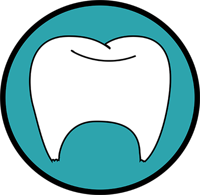

<!--
  Generated template for the EditClient page.

  See http://ionicframework.com/docs/components/#navigation for more info on
  Ionic pages and navigation.
-->
<ion-header>

  <ion-navbar>
    <ion-title dir="rtl">ערוך לקוח</ion-title>
  </ion-navbar>

</ion-header>


<ion-content padding>
  <ion-row class="logo-row">
    <ion-col></ion-col>
    <ion-col width-67>
          </ion-col>
    <ion-col></ion-col>
  </ion-row>
  <ion-row class="signup-col">
    <button ion-button class="submit-btn" round type="submit" (click)="addTreatment() ">הוספת טיפול חדש</button>
  </ion-row>
  <ion-row class="signup-col">
    <button ion-button class="submit-btn" round color="light" type="button" (click)="showTreatments()">ראה טיפולים קודמים</button>
  </ion-row>
  <div class="login-box" align="center">
    <form (click)="editClient(selectedClient)" #clientForm="ngForm" dir="rtl">
      <ion-row align="center">
        <ion-col align="center">
          <ion-list inset align="center">
            <ion-item align="center">

              <ion-input name="תעודת זהות" [(ngModel)]="selectedClient.id" [disabled] = true align="center"></ion-input>
            </ion-item>
            <ion-item>
              <ion-input  name="שם פרטי" [(ngModel)]="selectedClient.name" [disabled] = true></ion-input>
            </ion-item>
            <ion-item>
              <ion-input  name="שם משפחה" [(ngModel)]="selectedClient.last_name" [disabled] = true></ion-input>
            </ion-item>
            <ion-item>
              <ion-input  name="מייל" [(ngModel)]="selectedClient.email" [disabled] = true></ion-input>
            </ion-item>
            <ion-item>
              <ion-input  name="שנת לידה" [(ngModel)]="selectedClient.dateOfBirth" [disabled] = true></ion-input>
            </ion-item>

          </ion-list>
        </ion-col>
      </ion-row>


    </form>


  </div>

</ion-content>
